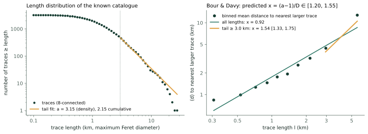
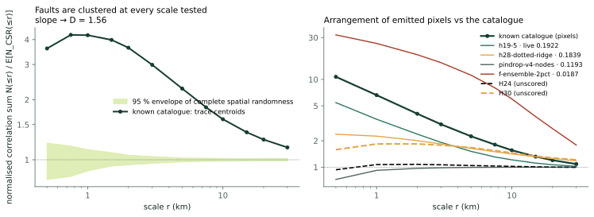
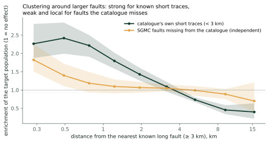
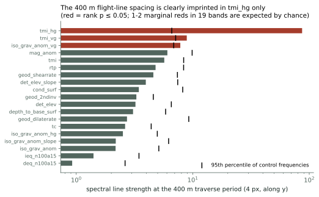
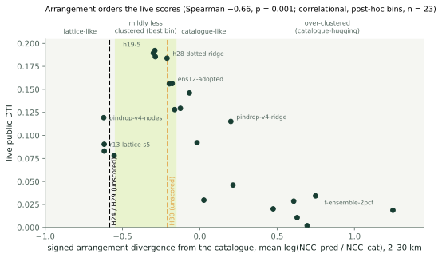

Faults are a spatial statistic. We fitted it on the known catalogue, then audited our own submission with it.
The known INGENIOUS/USGS traces are strongly clustered (4.2× the random expectation at 1 km, still 1.15× at 30 km; D ≈ 1.51–1.66) and, above 3.0 km, follow the Bour & Davy (1999) scaling. Held against that statistic, the shipped H24 emission is a uniform lattice that carries a spectral line at exactly the 400 m flight-line spacing and breaks its own separation rule. H29 and H30 fix that. The prior the statistic gives for missing faults is real but small.
The known catalogue as a fault population
Definitions are declared, not assumed (src/gems/faultstats.py): a fault is one 8-connected component (touching traces merge, so this is a lower bound on the number of faults and an upper bound on their length);
a is the density exponent; length is the maximum Feret diameter. Sources: Bour & Davy (1999, GRL 26(13) 2001–2004),
Marrett et al. (2018, J. Struct. Geol. 108, 16–33), Wang et al. (2019, Petrol. Geosci. 25, 415–428),
Clauset, Shalizi & Newman (2009, SIAM Rev. 51, 661–703).
| statistic | value (95 % interval) | notes |
|---|---|---|
| traces (8-connected components of the 60,988 label pixels) | 3,199 | median length 1.24 km, 90th percentile 3.59 km, longest 27.4 km; 467 traces ≥ 3 km |
| length exponent a (density, n(l) ~ l−a) | 3.15 [2.99, 3.34] | above 2.95 km (KS-chosen), n = 480; cumulative exponent 2.15; power law vs lognormal: indistinguishable (Vuong z = -1.31); path-length check a = 2.94 [2.79, 3.13] |
| nearest-larger-neighbour exponent x, tail ≥ 3.0 km, centroid distance | 1.54 [1.33, 1.75] | geometric-mean estimator 1.37; edge-to-edge distance 1.84 [1.57, 2.13] |
| same, all lengths | 0.92 [0.87, 0.96] | Spearman ρ(length, distance) = 0.70: large faults have their nearest larger neighbour farther away, as Bour & Davy report; the flatter all-length slope means short traces sit farther from larger ones than the long-fault scaling predicts |
| correlation dimension D of trace centroids | 1.51 (1.5–30 km) · 1.66 (0.5–10 km) | all fault pixels 1.33; slope of the normalised correlation sum + 2 gives 1.56 (an independent route to the same D) |
| normalised correlation sum, centroids (CSR = 1) | 0.5 km: 3.6× · 1 km: 4.2× · 2 km: 3.6× · 5 km: 2.3× · 10 km: 1.6× · 30 km: 1.2× | 95 % CSR envelope 0.88–1.12 at 1 km, 0.99–1.02 at 30 km: clustered at every scale tested |
Independent replication on the vector USGS Quaternary traces (gdr_qfaults_traces.csv: surveyed lengths, no rasterisation, no merging of touching traces). A different object definition, so agreement is a replication, not a duplicate.
| statistic | vector traces | reading |
|---|---|---|
| traces used | 376 of 1,126 (centroid inside the footprint) | median length 10.0 km; map_scale attribute 100 (280), 250 (846) |
| length exponent a (density) | 3.03 [2.68, 3.55] | above 25.6 km, n = 76; raster components: 3.15 [2.99, 3.34] |
| correlation dimension D (1.5–30 km) | 1.45 | raster centroids 1.51 |
| nearest-larger-neighbour x, tail | 1.12 [0.70, 1.44] | Bour & Davy predicts 1.40 from this table's own a and D: consistent; all lengths 0.45 |


x = (a − 1)/D, checked three ways
The abstract states the relation but not whether a is the density or the cumulative exponent. With positions of fractal dimension D independent of size, the nearest of the N(>l) ~ l−(a−1) larger faults lies at d ~ N−1/D ~ l(a−1)/D, which reproduces the published form only for the density exponent. A simulation confirms it, and the check is a unit test.
| quantity | value | reading |
|---|---|---|
| predicted x = (a − 1)/D, a = density exponent | 1.36 | range [1.20, 1.55] from the interval on a and the two D estimates |
| measured tail x, centroid distance | 1.54 [1.33, 1.75] | consistent |
| measured tail x, edge distance | 1.84 [1.57, 2.13] | marginal: just above the predicted range |
| measured x, all lengths | 0.92 | short traces break the scaling (incompleteness, merging or a physical break; the data cannot separate them) |
| what a cumulative exponent would predict | 0.73 | wrong reading of the relation — see the simulation below and flag I-14 |
Simulation (6,000 points, 3 seeds each; positions are Lévy dust of dimension D, lengths Pareto with density exponent a, independent):
| a (density) | D | x, geometric-mean estimator | x, arithmetic-mean estimator | (a − 1)/D | (a − 2)/D |
|---|---|---|---|---|---|
| 2.6 | 1.5 | 0.89 | 1.15 | 1.07 | 0.40 |
| 2.6 | 1.2 | 1.00 | 1.43 | 1.33 | 0.50 |
| 2.2 | 1.5 | 0.66 | 0.86 | 0.80 | 0.13 |
| 3.0 | 1.8 | 1.05 | 1.27 | 1.11 | 0.56 |
| 2.6 | 1.8 | 0.84 | 1.01 | 0.89 | 0.33 |
measured x is bracketed by the geometric-mean and arithmetic-mean estimators around (a_density - 1)/D in every case and is far from (a_density - 2)/D: the density exponent is the right reading of the published relation.
How strongly do missing faults cluster around known larger faults?
Two target populations answer different questions. The catalogue's own short traces show how known faults are arranged; SGMC faults that the catalogue does not capture (> 300 m from any catalogue pixel, an independent compilation) are the only available sample of faults missing from it. Distance is to the nearest of the 467 traces of ≥ 3 km; intervals are 95 % spatial-block bootstraps (50 km blocks).

| distance from the nearest long known fault (≥ 3 km) | catalogue's own short traces | SGMC faults missing from the catalogue | eligible px |
|---|---|---|---|
| 0–200 m (structural) | 0.24 [0.18, 0.34] | — | 105,534 |
| 200–400 m | 2.27 [1.88, 2.81] | 1.82 [1.50, 2.25] | 114,524 |
| 400–600 m | 2.42 [1.99, 2.84] | 1.40 [1.11, 1.72] | 123,931 |
| 0.6–1 km | 2.22 [1.91, 2.50] | 1.19 [0.93, 1.49] | 247,406 |
| 1–1.5 km | 1.80 [1.58, 2.02] | 1.10 [0.91, 1.29] | 311,834 |
| 1.5–2.5 km | 1.43 [1.26, 1.61] | 1.07 [0.93, 1.22] | 620,921 |
| 2.5–4 km | 1.09 [0.95, 1.22] | 1.05 [0.97, 1.15] | 871,508 |
| 4–7 km | 0.73 [0.67, 0.80] | 0.99 [0.84, 1.11] | 1,365,485 |
| 7–12 km | 0.46 [0.34, 0.59] | 0.89 [0.75, 1.03] | 1,061,887 |
| 12–20 km | 0.40 [0.22, 0.64] | 0.70 [0.40, 1.21] | 292,401 |
| > 20 km | 0.15 [0.00, 0.56] | 0.26 [0.00, 0.65] | 24,336 |
Blocked out-of-fold AUC of the fitted profile (2 × 2 geographic blocks): catalogue short traces 0.672, faults missing from the catalogue 0.551 (parameter-free baseline 1/(1 + d/1 km): 0.668 / 0.562 — the fitted profile adds nothing beyond “closer is better”). The 0–200 m band is structural (distinct 8-connected traces cannot be closer), and the SGMC 200–400 m band only holds 300–400 m by construction.
The extrapolated pattern beyond a tip
1,214 endpoints of the long traces; each eligible pixel is assigned to the wedge between its offset and the outward strike direction.
| target | wedge around the tips | 0.3–0.6 km | 0.6–1 km | 1–1.5 km | 1.5–2 km | 2–3 km |
|---|---|---|---|---|---|---|
| SGMC missing from catalogue | continuation (<= 25 deg of strike, beyond the tip) | 2.06 [1.66, 2.42] | 1.32 [1.10, 1.56] | 1.15 [0.99, 1.31] | 1.09 [0.97, 1.21] | 1.03 [0.93, 1.12] |
| oblique forward (25-65 deg) | 1.30 [1.08, 1.55] | 1.13 [0.96, 1.29] | 0.99 [0.88, 1.11] | 1.00 [0.92, 1.08] | 0.92 [0.85, 0.99] | |
| lateral (65-115 deg) | 1.34 [1.12, 1.58] | 0.96 [0.85, 1.10] | 0.94 [0.83, 1.05] | 0.95 [0.87, 1.06] | 0.97 [0.90, 1.06] | |
| continuation ÷ lateral (pooled) | 1.13 [1.01, 1.27] | |||||
| catalogue short traces | continuation (<= 25 deg of strike, beyond the tip) | 2.59 [2.25, 2.92] | 2.03 [1.80, 2.25] | 1.59 [1.44, 1.75] | 1.23 [1.10, 1.36] | 1.01 [0.92, 1.11] |
| oblique forward (25-65 deg) | 1.43 [1.24, 1.65] | 1.29 [1.14, 1.45] | 1.12 [1.01, 1.22] | 0.98 [0.89, 1.07] | 0.86 [0.79, 0.92] | |
| lateral (65-115 deg) | 1.21 [1.03, 1.39] | 1.15 [1.02, 1.29] | 1.07 [0.96, 1.18] | 0.96 [0.88, 1.05] | 0.79 [0.73, 0.85] | |
| continuation ÷ lateral (pooled) | 1.40 [1.27, 1.55] |
src/gems/clusterprior.py). Inside a dispersed lattice it moves about 1 % of the dots more than 200 m: within a 9 × 9 non-maximum-suppression window the prior is flat, so it matters only if it changes which windows get dots — an allocation
that the live scores do not support (emissions concentrating > 3× within 1 km of long known faults scored 0.002–0.046; Spearman ρ = -0.30, p = 0.16).Survey-line aliasing, block edges and arrangement
Geometry (verified). USGS GeoDAWN metadata (DOI 10.5066/P93LGLVQ): Area 2 traverse lines every 400 m flown east–west, tie lines every 4,000 m north–south; Area 1 200 m / 2,000 m. The official outlines reproduce the published areas to 0.04 % (footprint 51,673.7 km² vs 51,695.2 km² data extent; Area 1 2,412.6 km² vs 2,411.7 km²); Area 1 is 4.7 % of the footprint and the 1 m lidar covers 75.4 %.

tmi_hg is far above its controls (tmi_hg, tmi_vg, iso_grav_anom_vg reach p ≤ 0.05; with 19 bands one or two marginal reds are expected by chance). The 4 km tie-line period is significant in rtp, tmi_vg, tmi, det_elev_slope.Detector. Row (or column) means of the raster inside Area 2 → detrended → power at the survey frequency ± 0.0015 c/px over the median of a ± 0.012 band → rank among 60 control frequencies (minimum attainable p = 1/61 = 0.016). Boundary jumps use the density ratio across the footprint, lidar-validity and Area 1 edges relative to the same ratio for the catalogue.
Arrangement baseline. A catalogue-like sample (independent thinning of whole traces to the same pixel count) sits 0.18 (max 0.21) log-units from the catalogue at 2–30 km; the symmetric divergence of H24 is 3.5× that. The signed divergence (negative = less clustered than the catalogue) separates a flat lattice from a catalogue-hugging detector, which the symmetric measure cannot.

| arrangement bin (signed divergence) | n | mean live DTI | range | members |
|---|---|---|---|---|
| lattice-like (flat, Poisson-like at >= 1 km) | 4 | 0.093 | 0.078–0.119 | pindrop-v4-nodes, pindrop-v4-discovery, r13-lattice-s5, tso1-conj-alteration-mag |
| mildly less clustered than the catalogue (the bin holding the best live scores) | 7 | 0.170 | 0.128–0.192 | h19-5, h19-4, h16-1, h28-dotted-ridge, ens12-adopted, dual-family-union, h25-ctx-ridge |
| catalogue-like | 4 | 0.099 | 0.030–0.146 | lidarscarp-top2pct, r7-nms3-dem10-scarp, h20-dem10-scarp-thin, h19-c |
| over-clustered (catalogue-hugging) | 8 | 0.034 | 0.002–0.115 | pindrop-v4-ridge, h16-continuation, gemsdoe4-combined, hgb88-topk03, structural-area06-v1, f-ensemble-2pct, placeholder-2314b599, r5-geom-horse-ensemble |
H30's target is the median signed divergence of the seven best-scoring emissions (live DTI ≥ 0.1461): -0.212. Status: post-hoc: fixed after the audit table was seen; descriptive of 23 emissions; not validated.
| artefact | live DTI | emitted px | signed divergence | arrangement bin | near-long-fault enrichment 0.2–1 km | isolated-dot share | 400 m line strength (y) | 4 km line strength (x) |
|---|---|---|---|---|---|---|---|---|
| h19-5 | 0.1922 | 121,131 | -0.29 | mildly less clustered than the catalogue | 1.37 | 0.10 | 2 | 3 |
| h19-4 | 0.1894 | 123,779 | -0.30 | mildly less clustered than the catalogue | 1.38 | 0.11 | 2 | 3 |
| h16-1 | 0.1855 | 123,939 | -0.29 | mildly less clustered than the catalogue | 1.38 | 0.12 | 2 | 3 |
| h28-dotted-ridge | 0.1839 | 65,236 | -0.21 | mildly less clustered than the catalogue | 2.01 | 1.00 | 4 | 5 |
| ens12-adopted | 0.1563 | 166,519 | -0.18 | mildly less clustered than the catalogue | 1.43 | 0.04 | 29 | 7 |
| dual-family-union | 0.1560 | 175,949 | -0.20 | mildly less clustered than the catalogue | 1.44 | 0.04 | 42 | 6 |
| lidarscarp-top2pct | 0.1461 | 76,859 | -0.07 | catalogue-like | 1.50 | 0.20 | 9 | 2 |
| r7-nms3-dem10-scarp | 0.1294 | 103,347 | -0.13 | catalogue-like | 2.11 | 1.00 | 2 | 9 |
| h25-ctx-ridge | 0.1280 | 161,366 | -0.16 | mildly less clustered than the catalogue | 2.18 | 0.14 | 1 | 4 |
| pindrop-v4-nodes | 0.1193 | 155,021 | -0.62 | lattice-like | 0.94 | 1.00 | 9 | 4 |
| pindrop-v4-ridge | 0.1152 | 155,021 | +0.20 | over-clustered | 1.66 | 0.06 | 2 | 3 |
| h20-dem10-scarp-thin | 0.0921 | 143,657 | -0.02 | catalogue-like | 2.77 | 0.04 | 2 | 7 |
| r13-lattice-s5 | 0.0904 | 204,504 | -0.62 | lattice-like | 1.00 | 1.00 | 4 | 7 |
| pindrop-v4-discovery | 0.0830 | 155,021 | -0.62 | lattice-like | 0.99 | 1.00 | 5 | 5 |
| tso1-conj-alteration-mag | 0.0782 | 98,736 | -0.55 | lattice-like | 1.06 | 0.99 | 2255 | 6 |
| h16-continuation | 0.0461 | 283,532 | +0.21 | over-clustered | 3.39 | 0.02 | 4 | 14 |
| gemsdoe4-combined | 0.0343 | 258,323 | +0.75 | over-clustered | 1.59 | 0.02 | 8 | 4 |
| h19-c | 0.0297 | 452,798 | +0.03 | catalogue-like | 1.18 | 0.00 | 3 | 3 |
| hgb88-topk03 | 0.0286 | 131,416 | +0.61 | over-clustered | 3.79 | 0.02 | 2 | 9 |
| structural-area06-v1 | 0.0202 | 282,538 | +0.47 | over-clustered | 3.68 | 0.02 | 5 | 8 |
| f-ensemble-2pct | 0.0187 | 90,746 | +1.25 | over-clustered | 4.28 | 0.01 | 3 | 9 |
| placeholder-2314b599 | 0.0107 | 145,610 | +0.63 | over-clustered | 1.25 | 0.03 | 3 | 3 |
| r5-geom-horse-ensemble | 0.0020 | 116,219 | +0.69 | over-clustered | 2.91 | 0.00 | 21 | 4 |
| H24 (superseded) — unscored | — | 100,000 | -0.58 | lattice-like | 1.03 | 0.99 | 243 | 1 |
| H29 (de-aliased lattice) — unscored | — | 100,000 | -0.59 | lattice-like | 1.03 | 1.00 | 2 | 1 |
| H30 (primary) — unscored | — | 91,533 | -0.21 | mildly less clustered than the catalogue | 1.39 | 1.00 | 2 | 2 |
| GEMSDOE22 h22-1 (fractal clustering prior) — unscored | — | 123,495 | -0.24 | mildly less clustered than the catalogue | 1.45 | 0.18 | 3 | 4 |
| GEMSDOE22 h22-2 — unscored | — | 125,200 | -0.23 | mildly less clustered than the catalogue | 1.45 | 0.19 | 1 | 3 |
Red = rank p ≤ 0.05 against the control frequencies. Calibration against the live scores:
| audit descriptor | n | Spearman ρ vs live DTI | p | ρ vs placement skill | p |
|---|---|---|---|---|---|
| delta_large (log NCC divergence 2-30 km) | 23 | -0.39 | 0.066 | -0.60 | 0.002 |
| delta_small (0.5-1 km) | 23 | +0.05 | 0.809 | -0.40 | 0.057 |
| signed divergence 2-30 km (neg = less clustered than catalogue) | 23 | -0.66 | 0.001 | -0.23 | 0.284 |
| NCC-sum at 5 km | 23 | -0.67 | 0.001 | -0.23 | 0.286 |
| NCC-sum at 10 km | 23 | -0.65 | 0.001 | -0.22 | 0.308 |
| enrichment 0.2-1 km of long faults | 23 | -0.30 | 0.159 | +0.05 | 0.809 |
| enrichment >7 km from long faults | 23 | +0.28 | 0.196 | -0.06 | 0.785 |
| share isolated dots | 23 | +0.59 | 0.003 | +0.12 | 0.591 |
| share in components >=5 px | 23 | -0.59 | 0.003 | -0.12 | 0.585 |
| survey-line strength 400 m (y) | 23 | -0.15 | 0.503 | -0.28 | 0.198 |
| survey-line strength 4 km (x) | 23 | -0.27 | 0.217 | -0.25 | 0.258 |
| lidar-edge jump index | 22 | -0.22 | 0.329 | +0.04 | 0.867 |
| area1-edge jump index | 23 | +0.36 | 0.096 | +0.27 | 0.211 |
| n emitted pixels | 23 | -0.24 | 0.269 | -0.09 | 0.673 |
tso1-conj-alteration-mag, a magnetics-derived emission that scored 0.0782; five others with p ≤ 0.05 score anywhere from 0.002 to 0.156.
The isolated-dot share correlates with the score (ρ = +0.59, p = 0.003) but that is a type confound — the six dot emissions are hand-built rules, the worst scorers are probability maps thresholded near the catalogue, and the best line-type emission (h19-5, 0.1922) beats every dot-type one.
All of this is correlational and the bins were drawn after the fact; the one controlled pair (same score, same 155,021 pixels: ridge +0.20, nodes −0.62) scored 0.1152 and 0.1193.H24 → H29 → H30
| file | dots | K̄ | η | 300 m coverage | 400 m line (strength, rank p) | pairs closer than 400 m | signed divergence | arrangement bin | mean score rank of dots |
|---|---|---|---|---|---|---|---|---|---|
| H24 (superseded) | 100,000 | 0.1738 | 0.946 | 0.438 | 243.3 (p = 0.016) | 6,651 | -0.58 | lattice-like | 0.704 |
| H29 (de-aliased lattice) | 100,000 | 0.1749 | 0.952 | 0.441 | 2.4 (p = 0.738) | 0 | -0.59 | lattice-like | 0.701 |
| H30 (arrangement-matched, primary) | 91,533 | 0.1566 | 0.931 | 0.379 | 2.3 (p = 0.836) | 0 | -0.21 | mildly less clustered than the catalogue | 0.813 |
Same ranking, same budget logic. H29 equalises row phases (5.4% of dots move 1.45 px on average) and breaks score ties; H30 additionally limits the candidates to the top 30 % of the score (2.1% moved), which costs about 10 % of kernel coverage and moves the arrangement into the bin that holds the best live scores. Neither adds placement skill; neither has a live score; the blocked-holdout gate is not passed because no valid holdout exists (I-05).
Minimum-regret check. If the score carried no information (skill 1, hidden faults uniform), H30's concentration would cost -3.3 % at |G| = 6k, -4.1 % at |G| = 10k, -4.8 % at |G| = 15k of DTI relative to H24 (H29: +0.6 %, +0.6 %, +0.6 %); if the score is informative, the concentration gains. That asymmetry, not a validated forecast, is the case for H30 over H29.
Do lidar scarps sit offset from the catalogued traces?
If many catalogue traces were displaced by a few hundred metres from their scarps, the scarp signal would peak at a non-zero distance. It does not. Monotone decay from the catalogue pixels with the maximum at distance 0 and no off-centre ring: no average displacement between catalogued traces and lidar scarps is visible at 100 m resolution; a displaced subset cannot be excluded.
| scarp metric ÷ far-field mean | 0 | 50–150 | 150–250 | 250–350 | 350–450 | 450–550 | 550–700 | 700–900 | 0.9–1.2 km | 1.2–1.6 km | 1.6–2.2 km | 2.2–3 km |
|---|---|---|---|---|---|---|---|---|---|---|---|---|
| upface_max | 1.38 | 1.34 | 1.30 | 1.29 | 1.28 | 1.27 | 1.26 | 1.25 | 1.24 | 1.22 | 1.19 | 1.13 |
| downface_max | 1.37 | 1.30 | 1.26 | 1.25 | 1.25 | 1.25 | 1.24 | 1.24 | 1.23 | 1.22 | 1.19 | 1.14 |
| step_max | 1.24 | 1.20 | 1.17 | 1.17 | 1.16 | 1.16 | 1.16 | 1.15 | 1.14 | 1.14 | 1.12 | 1.10 |
| lapneg_max | 1.24 | 1.20 | 1.18 | 1.17 | 1.17 | 1.17 | 1.16 | 1.16 | 1.15 | 1.14 | 1.12 | 1.09 |
Metrics are 100 m aggregates of 1 m lidar features (valid on 79 % of catalogue pixels), relative to pixels > 4 km from any catalogue trace.
What this page does not show
- No hidden-label validation. A prior that ranks held-out known faults (AUC 0.67) is not a prior that finds unknown ones; the independent SGMC proxy gives 0.55, and it is itself a coarse, mostly older compilation.
- Traces merge. Component count and length are bounds, not the vector fault inventory; the vector traces of GDR 1391 carry lengths and centroids only, so edge distances cannot be computed from them.
- The paper body was not read. The Bour & Davy and Marrett et al. abstracts were read at the publishers; the density reading is derived and simulated; Marrett's CorrCount software was not run.
- Arrangement bins are post-hoc (23 emissions in families) and H30's target is a rule fixed after seeing the table.
- Survey-line phase test is inconclusive: the emission comb's phase lies between that of
tmi_hgand that of the score, so inheritance from the survey cannot be separated from coincidence (I-15).
python3 scripts/restore_workspace.py --all python scripts/fit_fault_statistics.py # -> docs/data/fault-statistics.json python scripts/audit_predictions.py --extra <rasters> # -> docs/data/prediction-audit.json python scripts/build_audited_emission.py --variant h30 --set-primary python scripts/make_cluster_figures.py python -m unittest tests.test_faultstats tests.test_audit tests.test_clusterprior